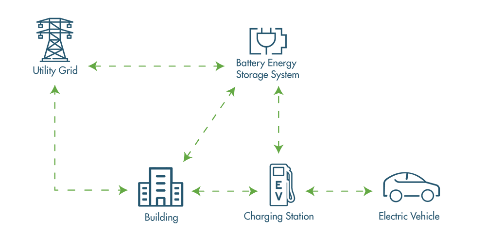
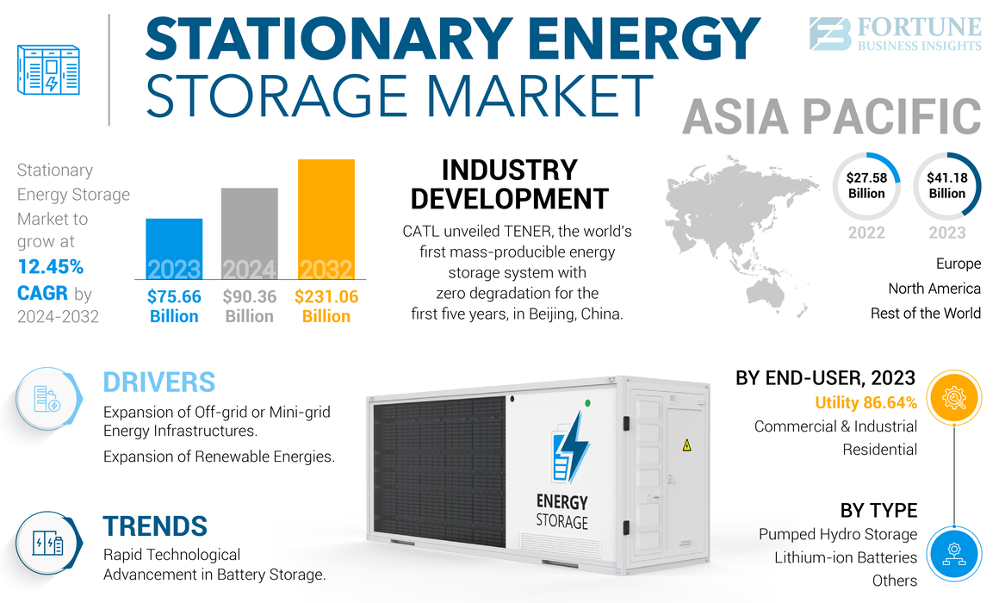
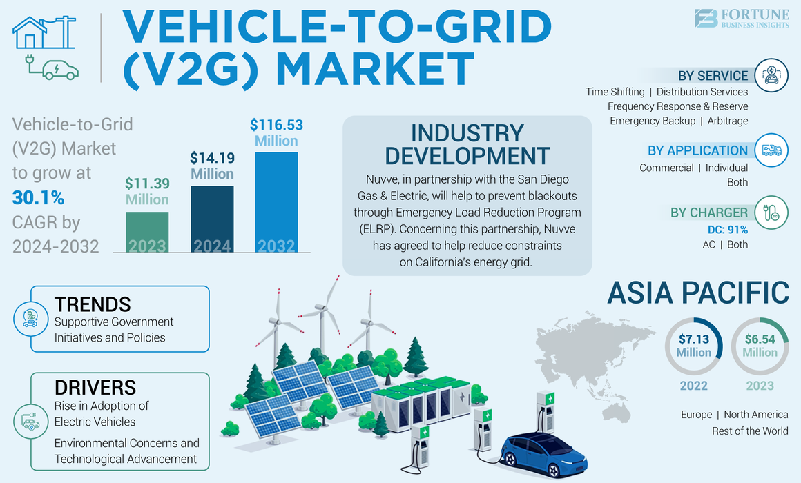
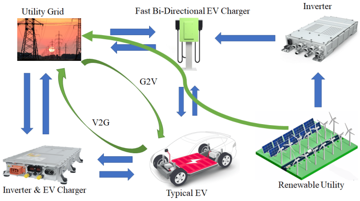
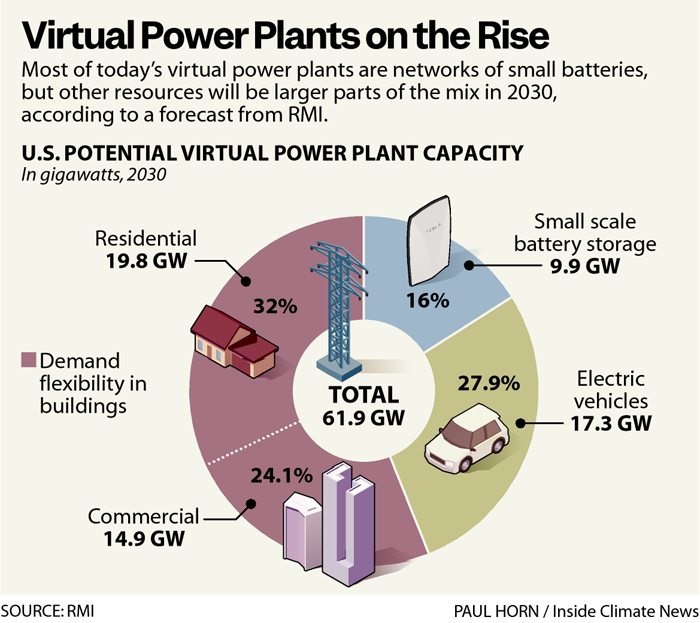
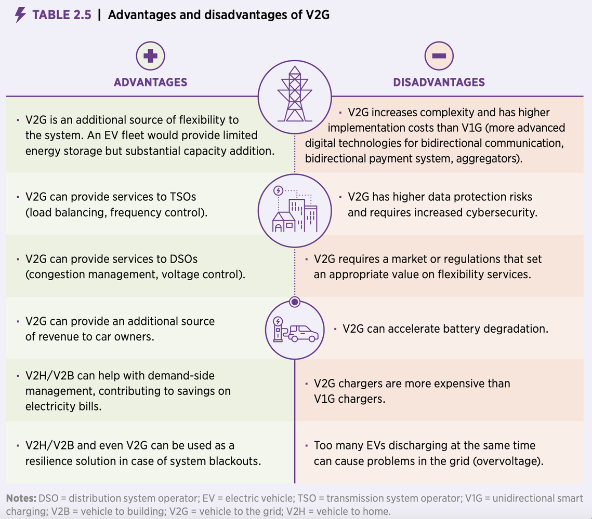
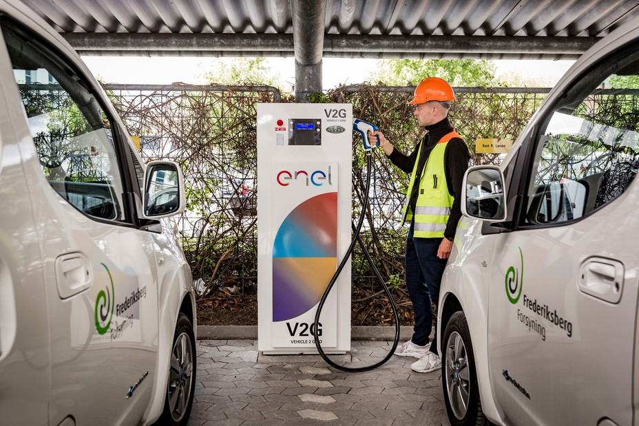
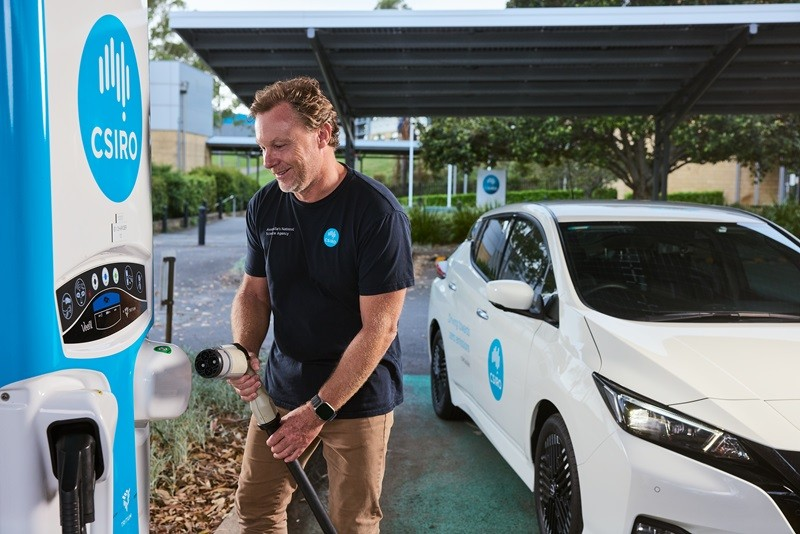
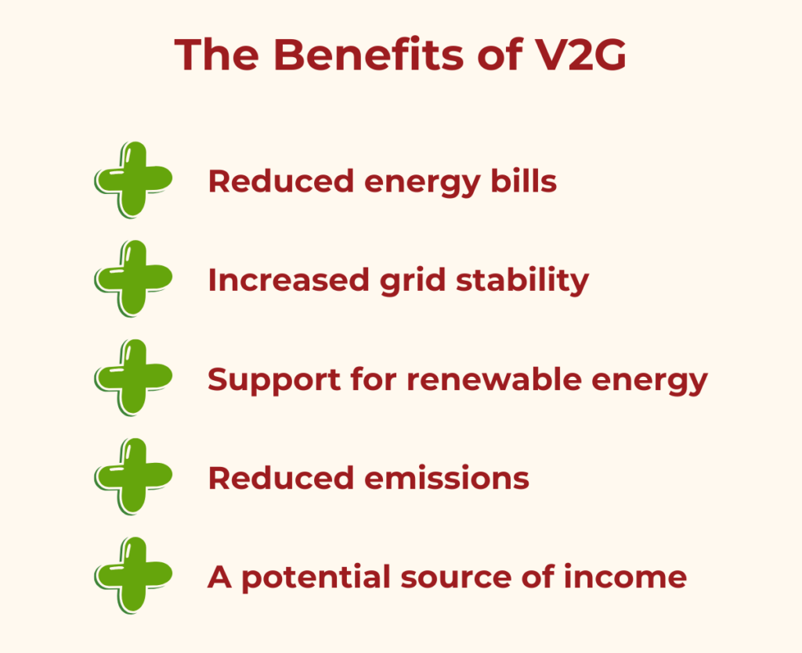
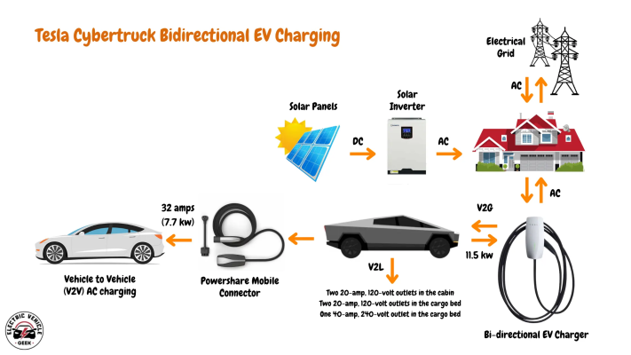

The convergence of Vehicle-to-Grid (V2G) technology and stationary Battery Energy Storage Systems (BESS) represents a transformative approach to modern energy management, creating sophisticated two-way energy hubs that promise to revolutionize how we generate, store, and distribute electrical power. This integration addresses critical challenges in grid stability, renewable energy integration, and peak load management while creating new economic opportunities for consumers and utilities alike.

The Foundation: Understanding V2G and BESS Technologies
Vehicle-to-Grid (V2G) technology enables electric vehicles to function as mobile energy storage units through bidirectional charging systems. Unlike traditional unidirectional charging where electricity flows only from the grid to the vehicle, V2G allows stored energy in EV batteries to flow back to the electrical grid when needed. This transformation turns every EV from a simple energy consumer into an active participant in the power ecosystem.
Stationary Battery Energy Storage Systems (BESS) provide fixed energy storage capacity at strategic locations throughout the electrical grid. The global BESS market, valued at approximately $76.69 billion in 2025, is projected to grow at a CAGR of 17.56% to reach substantial market penetration by 2034. These systems serve multiple functions including grid stabilization, renewable energy integration, peak shaving, and backup power provision.

Market Dynamics and Growth Trajectory
The market opportunity for integrated V2G and BESS systems is substantial. The V2G technology market alone was valued at $5.54 billion in 2024 and is projected to reach $49.75 billion by 2034, representing a remarkable CAGR of 28.13%.
This rapid growth is driven by several key factors:
- Grid Infrastructure Pressures: Climate change and extreme weather events are placing unprecedented strain on aging electrical infrastructure. The U.S. Department of Energy projects that growing demand for electric vehicles and other electricity-dependent technologies could increase power grid loads by up to 38% by 2050.
- Renewable Energy Integration Challenges: The intermittent nature of solar and wind power requires sophisticated energy storage solutions to maintain grid stability. Two-way energy hubs provide the flexibility needed to store excess renewable energy during peak production and discharge it during periods of high demand.

- Economic Incentives: V2G participants can generate significant revenue streams. The University of Delaware's pioneering V2G program demonstrates real-world financial benefits, with participants earning approximately $1,200 per year per EV for providing grid services.
Technical Architecture of Two-Way Energy Hubs
The integration of V2G and stationary BESS creates sophisticated energy management systems with multiple operational modes:
- Bidirectional Power Conversion: Central to these systems are advanced bidirectional chargers capable of both AC-to-DC and DC-to-AC conversion. These intelligent converters manage electricity flow in both directions while ensuring safe and efficient power transfer.

- Smart Communication Systems: Modern V2G systems utilize sophisticated communication protocols including ISO 15118-20:2022 standards to coordinate between vehicles, charging infrastructure, and grid operators. These systems enable real-time optimization based on energy prices, grid demand, and renewable energy availability.

- Energy Management Systems (EMS): Advanced EMS platforms coordinate the operation of both mobile (EV) and stationary battery assets, optimizing charging and discharging schedules to maximize economic benefits while maintaining grid stability.
Creating Virtual Power Plants Through Aggregation
One of the most promising applications of integrated V2G and BESS systems is the creation of Virtual Power Plants (VPPs). These systems aggregate distributed energy resources including EV batteries, stationary storage, solar panels, and wind turbines into coordinated networks that can provide grid services at scale.
Scale and Impact: Individual EV batteries typically range from 15-100 kWh, making them ideal for smaller applications like individual buildings or neighborhoods. However, when aggregated into VPPs, these distributed assets can provide megawatts of grid support. America's 2.4 million EVs already represent approximately 147 GWh of energy storage - five times more than currently exists on the grid.

Market Participation: VPPs enable participation in energy markets previously accessible only to large utilities. By 2040, EVs could become the 4th largest power supplier in Europe, providing 15-20% of instantaneous electricity demand. This transformation could save European EV owners between €450 and €2,900 annually through strategic energy trading.
Operational Benefits and Use Cases
Grid Stabilization: Two-way energy hubs provide essential grid services including frequency regulation, voltage support, and reactive power compensation. A microgrid study demonstrated that V2G systems can maintain frequency and voltage parameters within 1% of target values with transient deviations limited to 5%.
Peak Load Management: Strategic charging and discharging cycles help flatten demand curves, reducing stress on transmission infrastructure during peak hours. BESS integration with EV charging stations enables power boost capabilities that allow multiple vehicles to charge simultaneously without requiring costly grid upgrades.
Renewable Energy Optimization: Two-way energy hubs excel at managing renewable energy intermittency. During periods of high solar or wind generation, excess energy can be stored in both EV and stationary batteries. When renewable output drops, stored energy is discharged to maintain grid stability.
Emergency Backup Power: In grid outage scenarios, integrated V2G and BESS systems provide critical backup power capabilities. EVs can supply power to homes (V2H), buildings (V2B), or other vehicles (V2V) while stationary storage provides longer-duration support.

Real-World Implementation Examples
Denmark's Commercial V2G Hub: Nissan, Enel, and Nuvve are collaborating with Frederiksberg Forsyning utility to create the world's first commercial V2G hub in Copenhagen. This facility provides approximately 100 kW of grid stabilization capacity while maintaining full battery warranties for participating vehicles.

White Plains School District: Five electric buses from Lion Electric provide power to Con Edison customers, representing New York's first instance of buses feeding electricity back to the utility grid.
Essential Energy Innovation Hub: In Australia, Essential Energy is partnering with CSIRO to trial V2G integration with home energy management systems, demonstrating how EVs can capture excess solar energy and supply power during peak demand periods.

Economic and Environmental Impact
- Cost Reduction: BESS integration with EV charging enables strategic peak shaving, using stored energy during high-cost periods and recharging during off-peak hours. This approach results in substantial cost savings while reducing grid strain.
- Decarbonization: Two-way energy hubs accelerate the integration of renewable energy sources by providing the storage and flexibility needed to manage intermittency. This supports broader decarbonization goals while making renewable energy more reliable and economically viable.
- Revenue Generation: Beyond cost savings, two-way energy hubs create new revenue streams through grid service provision, energy arbitrage, and demand response participation.

Challenges and Considerations
- Technology Standardization: Widespread deployment requires standardization of communication protocols, charging interfaces, and safety systems. The ISO 15118 standard is still emerging, with broader vehicle compatibility expected by 2025.
- Battery Lifecycle Management: Frequent charging and discharging cycles must be carefully managed to preserve battery health. Advanced Battery Management Systems (BMS) monitor cell conditions and optimize charge cycles to maximize lifespan.
- Regulatory Framework: Current regulations in many jurisdictions present barriers to V2G deployment. Australia's experience highlights the need for updated standards and grid connection procedures to enable widespread adoption.
- Infrastructure Investment: Bidirectional charging infrastructure requires significant upfront investment. However, the long-term benefits often justify costs, particularly when combined with renewable energy systems and smart energy management.
Future Outlook and Market Evolution
The trajectory toward widespread V2G and BESS integration appears unstoppable. Major automakers are committing to bidirectional charging capabilities, with Tesla promising all vehicles will support V2G by 2025 and GM planning to make it standard across their EV lineup by 2026.

- Technological Advancement: Continued improvements in battery technology, power electronics, and artificial intelligence will enhance system efficiency and reduce costs. The integration of machine learning and predictive analytics will enable more sophisticated energy management strategies.
- Policy Support: Government incentives and mandates are accelerating deployment. The growing recognition of V2G and BESS systems as critical infrastructure for renewable energy integration is driving supportive policy frameworks worldwide.
- Market Maturation: As the technology matures and scales, costs will continue to decline while capabilities expand. The convergence of transportation electrification and grid modernization creates a powerful synergy that benefits all stakeholders.
Conclusion
The integration of V2G technology with stationary BESS represents a paradigm shift in energy management, creating intelligent two-way energy hubs that address multiple challenges simultaneously. These systems provide grid stabilization, enable renewable energy integration, create economic opportunities, and enhance energy resilience.